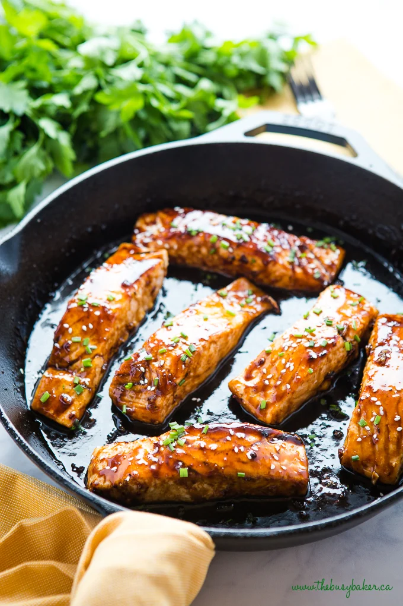

Maple Salmon:

Description
A healthy, well-balanced, and most importantly - DELICIOUS meal!
Salmon marries a light maple glaze to highlight sweet and umami flavors. The best of both worlds, and the best for your health!
Ingredients:
- 1/4 cup maple syrup
- 2 tbsp. soy sauce
- 1 clove of garlic, minced
- 1/4 tsp. garlic salt
- 1/8 tsp. ground black pepper
- 1 lb salmon
Steps:
- Stir maple syrup, soy sauce, garlic, garlic salt, and pepper together in a small bowl.
- Portion salmon into 4 equal-sized fillets. Place in a shallow glass baking dish and coat with maple syrup mixture. Cover the dish and marinate salmon in the refrigerator for 30 minutes, turning once halfway.
- Preheat oven to 400 degrees F (200 degrees C).
- Place the baking dish in the preheated oven and bake salmon uncovered until flesh is flaky; it will take approximately 20 minutes.